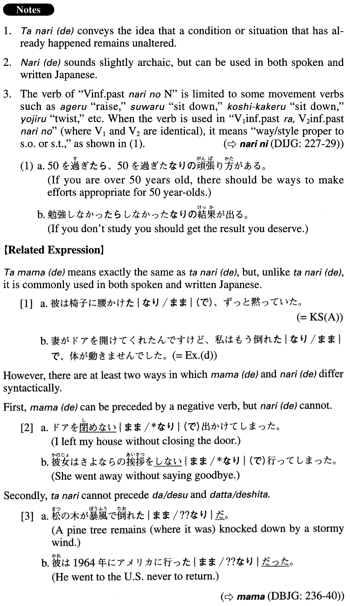

←
DoJG
→
たなり（で）
(A. 580)
Example sentences
(ksa).
彼は椅子に腰掛け
たなり
(で)
、ずっと黙っていた。
He sat in the chair and stayed there, silent the whole time.
(ksb).
片足を上げ
たなり
の格好で、数秒間目をつぶるように言われた。
I was told to close my eyes for a few seconds while I kept lifting one foot off the ground.
(a).
純一は17歳の時にフランスに行っ
たなりで
、日本には帰らず画家になって、今ではモンマルトルに住みついている。
Junichi went to France when he was 17 and never came back to Japan; he became a painter and now has settled in Montmartre.
(b).
エリサは『源氏物語』を買っ
たなり
、一ページも読まず、本棚に置きっぱなしだった。
Elisa bought The Tale of Genji, but she left it on the bookshelf without reading a single page.
(c).
彼は私の部屋の入り口に突っ立っ
たなりで
ニヤニヤ笑っていた。
My sweetheart stood at the entrance to my room, grinning.
(d).
妻がドアを開けてくれたんですけど、私はもう倒れ
たなりで
、体が動きませんでした。
My wife opened the door for me, but I had fallen down and couldn't move an inch.
(e).
腰をよじっ
たなり
の姿勢で長時間座っていたので、立てないほど腰が痛くなった。
Because I was sitting for a long time with my lower back twisted, it hurt so much I couldn't stand up.
(f).
人形がほこりをかぶっ
たなりで
棚に乗っかっている。
The doll sits on a shelf, covered with dust.
Formation
(i)
Vinformal past
なり
(
で
)
行っ
たなり
(
で
)
Someone went there never to return
横になっ
たなり
(
で
)
Someone lay down (without getting up)
(ii)
Vinformal past
なり
のNoun
立っ
たなり
の姿勢
A standing posture (maintained)
